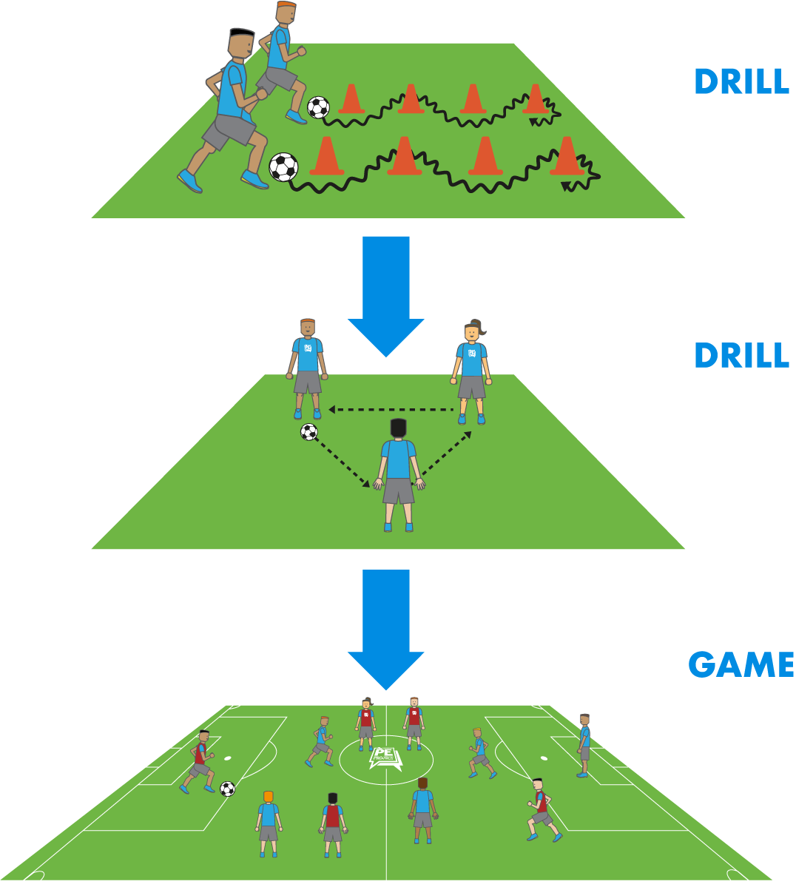
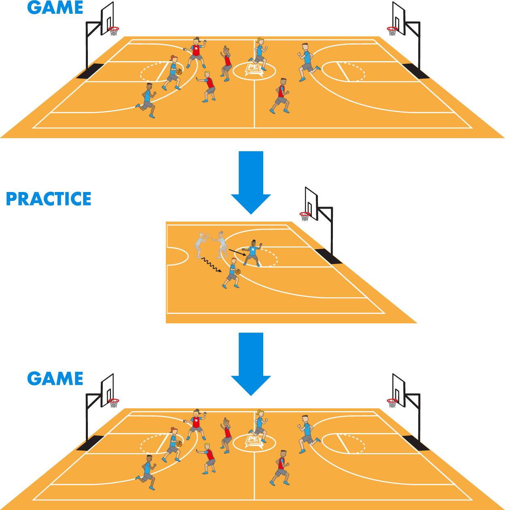
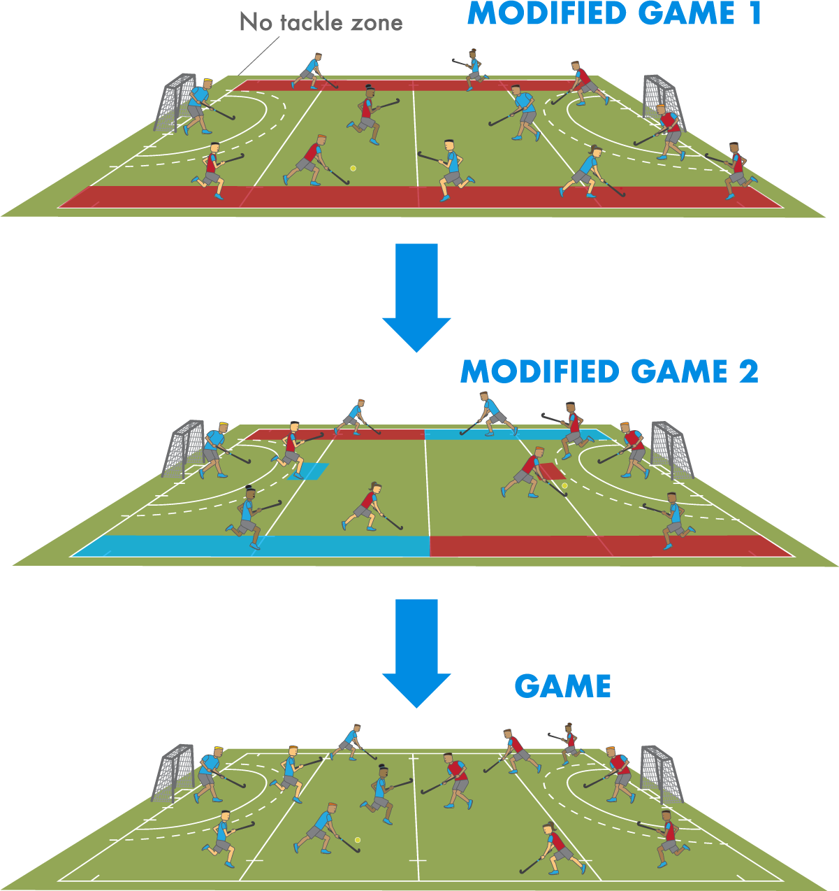
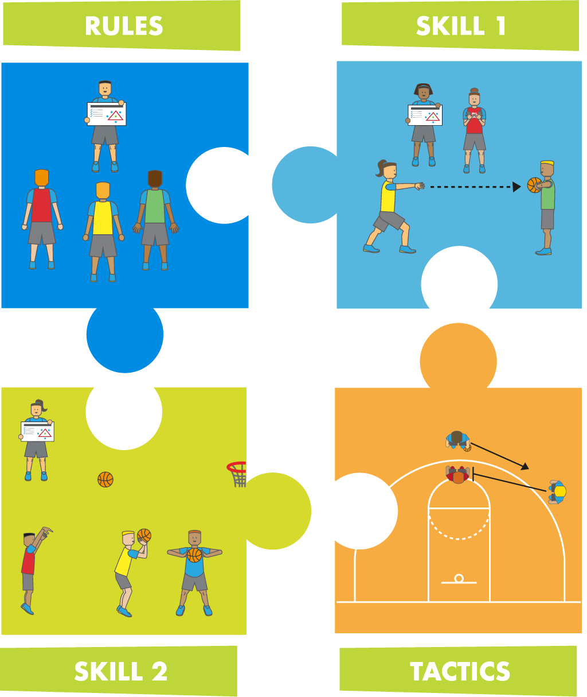
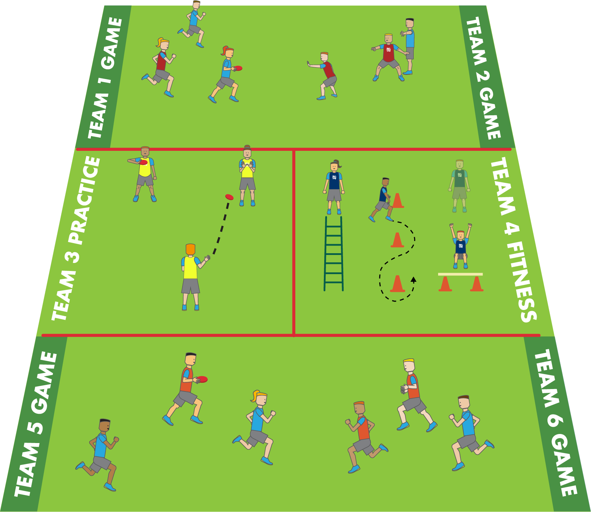

Being able to deliver Physical Education lessons in a variety of ways is an essential skill as a teacher as they place varying amounts of challenge on students, keep your classes exciting, and can help you attain different learning outcomes. Over the years there have been five primary teaching models in PE:
In this approach the teacher generally makes all the decisions as the class move from one drill to another. After the determined number of drills have been completed, pupils are rewarded with playing a game. This approach has been heavily criticized and considered as outdated, however, it is still used by many physical educators around the world and has been regarded as the full-back plan when delivery using other models have been unsuccessful or time-consuming. Nevertheless, it still has its benefits as it prepares students for sports coaching experiences outside of school.


In a typical TGfU lesson, students will begin by playing a version of the game (either modified or full-scale). After, the students will go through a skill or tactical activity that will help them perform better. Once completed, pupils return to a game where they will hopefully demonstrate improved skill or tactical execution. This approach has been regarded as more enjoyable then the traditional delivery of PE and helps students to become more competent games players as they learn within the context of the game. However, the biggest problem with this approach is that if not well-planned the lesson can lack direction and can turn in to unstructured play where the teacher has been demoted to an over-qualified sports-leader [1, 2].
This model has often times been regarded as synonymous with TGfU due to their striking similarities. However, under closer observation the Game Sense model differs due to the emphasis placed on developing better decision making in players by asking questions instead of telling players what to do. This is done by planning a series of modified games and questions which logically progress in order for students to develop their tactical understanding and/or ability to select the appropriate skill [3, 4].

For example, students could begin the lesson by playing a modified version of the game where channels (acting as no tackle zones) have been established on both sides of the pitch, thus emphasizing ‘width in attack’. The lesson would then progress to another modified version of the game where the emphasis has shifted towards switching the ball to the opposite wing quickly (in order to spread the defenders) and then trying to get the ball to a teammate in a central scoring position (‘depth in attack’, ‘penetrating the defense’). Finally, the lesson would culminate in a full-version of the game where students can try and apply the emphasized tactic in an authentic learning experience.

In this model the students take greater responsibility for their own learning and also help their class-mates learn. Unlike the other models, the cooperative learning model is less prescriptive in the layout of the lesson, but rather provides a wealth of student-centered activities that can be used either separately or in conjunction with another model. The best example of cooperative learning in practice is called ‘Jigsaw’, whereby students are first put in to teams (base groups) at the start of the lesson. Student may then compete in an activity or game with their base group [5].
After, students in each base group will be assigned a specialist role/responsibility or number. Students will then meet up in specialist groups with members from opposing teams. Together they explore a skill or tactic (or other area needing improvement) until they feel competent in their understanding. Students will then return to the base groups with their new specialist knowledge in-hand and take turns teaching each other what they've learnt. To wrap up the lesson, students return to the task or game from the beginning of the lesson and see if they have improved their performance.
This approach to learning is excellent for developing the whole-child (physical, social and affective domains) and places students solely at the center of their learning experience. In order to deliver this model effectively requires careful and thorough planning (from groupings to resources), a willingness to take risks, and it is helpful if students have experienced student-centered/independent learning strategies previously.

The Sport Ed. model is the most unique as it places the greatest emphasis on pupils leading their own learning. The unit is presented to the class as a mini-season whereby pupils are placed in to teams which they stay in until the end of the unit. Within their teams, students have to adopt a role (e.g., warm-up/cool-down specialist, skills coach, tactical coach, fitness trainer, and referee) and will take responsibility for planning and leading that component of the sessions which will be interspersed with games. Everything a team does during the unit will earn them points based on their effectiveness and organization. At the culmination of the season, teams may compete in a more traditional tournament but all points will be accumulated (from the unit) in order to declare an overall winner [6, 7].

Across these different teaching models, there is not one preferred approach. Instead, the approach you select for your class should be based on your students’ needs. However, if our aim is to make our learners more and more independent, then we can see a logical spectrum across the models, starting with the traditional approach and ending with the Cooperative Learning and Sports Ed. models. As a Physical Education practitioner we would urge you to get familiar with all these different approaches, try them out, and from there you can begin tailoring your own approach to teaching by taking your favorite parts from each of these and merging them to make your own unique approach to delivering PE.
References
- Griffin, L.L. & Butler, J.I. (2005) Teaching Games for Understanding: Theory, Research, and Practice. Champaign, IL: Human Kinetics
- Mitchell, S.A, Oslin, J.L., & Griffin, L.L. (2013) Teaching Sports Concepts and Skills: A Tactical Approach for Ages 7 to 18. Third Edition. Human Kinetics: Leeds
- Light, R. (2012) Game Sense: Pedagogy for performance, participation and enjoyment. London: Routledge.
- Slade, D. (2010) Transforming Plan: Teaching Tactics and Game Sense. Human Kinetics: Champaign, IL.
- Dyson, B. & Casey, A. (2016) Cooperative Learning in Physical Education and Physical Activity: A practical introduction. London: Routledge
- Siedentop, D. & Hastie, P.A. (2011) Complete Guide to Sport Education. Second Edition. Champaign, IL: Human Kinetics.
- Siedentop, D. (1994) Sport Education: Quality PE through Positive Sport Experiences. Champaign, IL: Human Kinetics.